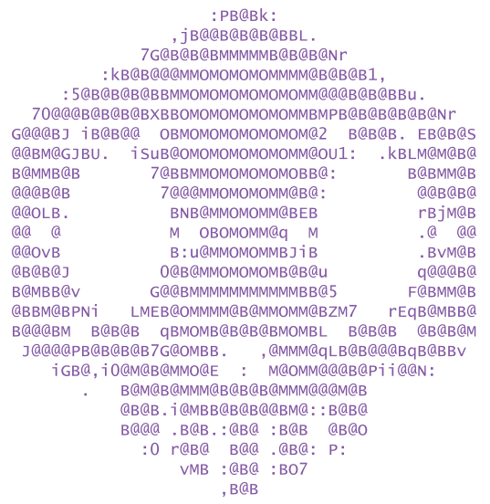
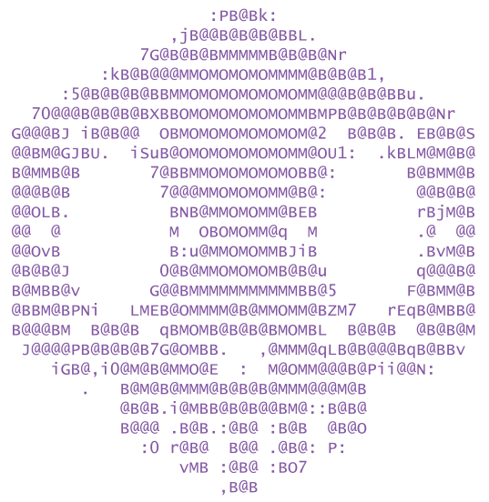

I am not exaggerating even 1% I swear, this was the very first time I even touched Tracer in the past six months at least. And even before that, I barely ever played her seriously as at all.
First match was anticlimatic bc although I somehow received a card and POTG (uhh... Blizzard?), I really didn't play well or do much.
I saved this VOD almost purely for the second match. I really don't think I made a significant mistake at all, and if I got some more help or had a little more luck, I would have finished off that Zarya at the end by myself. Then again, dying in that spot is what really set up my game-winning bomb.
My first bomb already felt pretty damn good. This bomb was probably the best feeling bomb I've ever had as a Tracer. I'm glad I made myself be patient for a moment instead of just recklessly trying to dive in as soon as possible.
Kinda felt bad for the Winston. Felt like the team probably hated on him for getting them killed twice. But oh well, it's all part of the game.
I Own at Torb
I know Dafran is the Torb master, but I've never played a single game of Torb where I didn't just dominate. I don't even play Torb much (cuz I think it's dumb), but his kit just seems to match my style so naturally.
I started this game in spawn intending to Mercy for these clowns as a huge gesture of kindness to them. Then they roll out of spawn with that comp (nothing ever, ever, ever makes me more angrier than playing on a Sym Mei team -.-), and I'm just seriously livid. That's why after I switched to Torb I started spamming the voice lines so much; I was just intending to troll them as much as I could that game.
Instead, it turned into what was perhaps one of the single-handed most dominant Torb performances of my life. In particular, I just seemed to anticipate how to play my turret placements and use my ults so perfectly.
Despite starting off approaching the whole thing as a complete troll match, it ended up feeling pretty damn good. At one point, Our Sombra said "I bow to you" lol.
Noobie Hacker?
Never had an interest in a character who does so much nothing for such long portions of matches. I've only recently started to kind of(?) enjoy playing her.
Not a whole lot of analysis on this VOD other than embarassment for not understanding how to use her kit at times and probably looking pretty silly for it.
One thing I have learned for certain though: she can be fun, but only if you have 5 other teammates capable enough to even consider playing her.
Just Takin' Out the Trash
Besides Sombra, Ashe was the by far the newest hero I've tried out. The reason I like her is for her kit, but the reason I hate her is her hero design.
Blizzard has this annoying habit of trying to make some things as super realistic about the game that they can, and then other aspects of it as super unrealistic as they can. Not even gonna get started on that issue right now. But it's funny how Ashe's scope is literally functionally the same as Widow's (on my account they even share identical crosshairs). Yet Ashe's in scope register-consistency is excrutiatingly far poorer than Widow's, bc apparently since Ashe is wielding a shotgun (a shotgun with a scope...?) instead of a sniper-rilfe, her crosshair has to bounce up and down each time she fires to make it look cool. Lol really...? For that you sacrifice consistant functionality...? Sigh.
What makes up for it for me is when I wanna play with someone with a fun kit as an occasional switch-up from the usual. Even though Ashe has been out for a while now, I think her firecracker is still arguably the most underrated secondary ability in the entire game. If you can get her stupid aforementioned crosshair to aim correctly, you can blow up firecrackers yourself in the perfect spots with the perfect timing to make the most clutch of plays in the game. Her jump-back is extremely valuable, and of course, as much as I hate the ult itself overall, launching Bob into an enemy team's area at the right time can have devastating potential
I think the effects of both the firecracker and Bob abilities is clearly evident in the ending of this VOD. At the time I peered over the edge of the last point and threw the firecracker in there, our team was completely outnumbered and looked futile against theirs. The firecracker was well executed and, I believe, hit all six members of their team at once, I took out one guy with a long-distance shot, and then once I threw Bob in there on top of it all, it was basically guaranteed GG (unless the Zen had Trans I suppose, which he didn't).

 
